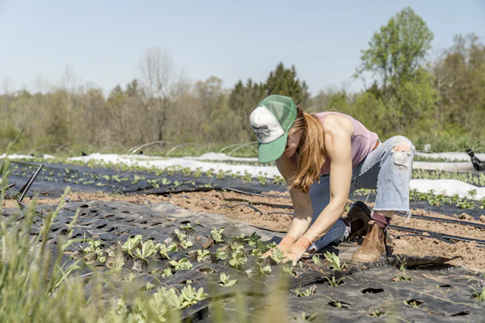
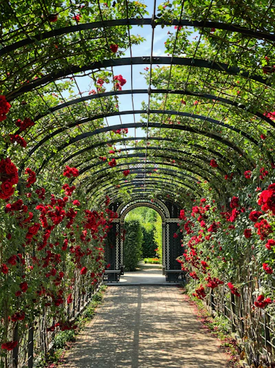
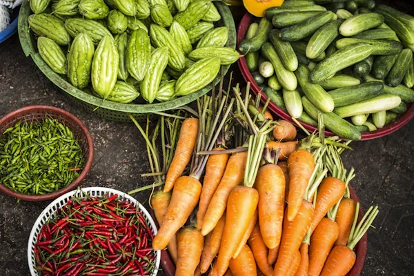

Our mission in the Agriculture & Farm industry.

Map your fields, organize your equipment, and manage daily tasks across your entire farm from a single dashboard.

Track planting dates, monitor growth stages, and predict harvest times with our intelligent crop timelines.

Ensure your soil is healthy and your crops are hydrated using our smart irrigation and soil monitoring tools.
How we grew from a small idea to a global platform.
Started as a small local farm management tool for a community of 50 farmers.
Expanded nationwide and integrated AI-driven crop advisory.
Now serving over 12,000 farmers globally with full end-to-end management.
Protecting the earth for future generations.
Farmers helping farmers succeed.
Leveraging tech for better yields.
Honest data, honest practices.
The experts behind the platform.
CEO & Founder
Head of Agronomy
Chief Technology Officer
We are actively working to reduce the carbon footprint of agriculture by optimizing logistics, reducing chemical runoff, and promoting regenerative farming practices.